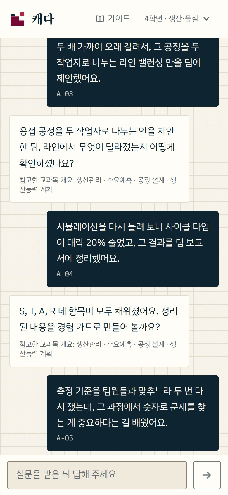

01 · 캐기
수업을 아는 AI가 한 번에 하나씩 묻습니다
온보딩에서 체크한 과목의 개념과 대표 과제를 바탕으로 경험을 꺼내는 질문을 합니다. 상황·과제·행동·결과가 모두 채워질 때까지, 빠진 부분만 다시 묻습니다.
- 한 회차에 경험 하나, 중간에 멈춰도 이어서 할 수 있습니다
- 정확한 숫자가 기억나지 않으면 "대략"이라고 답해도 됩니다
- 휴대폰에서도 대화하듯 답할 수 있습니다
